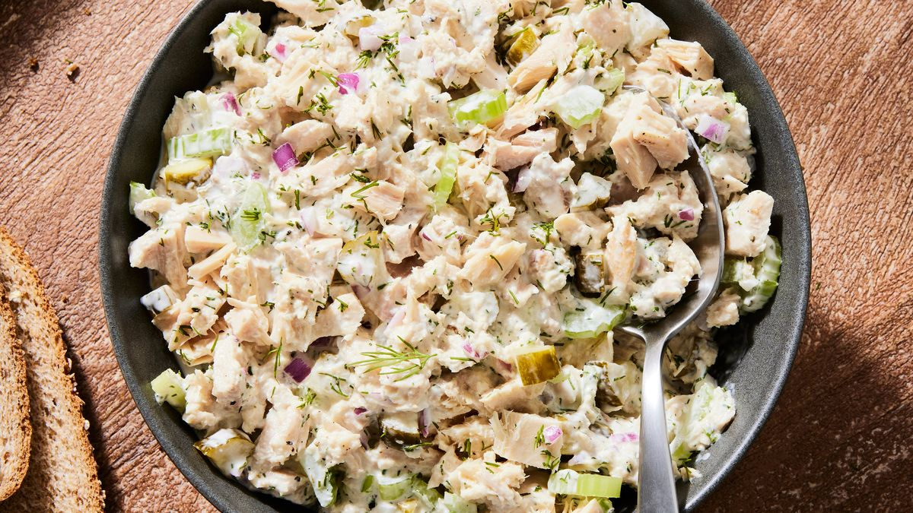

Tuna Salad

A healthy and fast dish
You really can't beat a classic tuna salad. As a kid, this
recipe was often packed by my mom for school lunches. As an
adult I often eat it wrapped in lettuce, sandwiched between
gluten-free bread or flaxseed crackers.
It's incredibly easy to make with canned tuna and few pantry
staples - hooray for simple recipes!
Ingredients
- Canned tuna
- Mayonnaise
- Celery
- Red onions
- Parlsey
- Dijon Mustard
- Salt and pepper
Steps
- Drain your tuna and put it in a bowl
- Add the mayonnaise, celery, red onion, parsley and dijon mustard in the bowl
- Use a fork to mix everything while breaking up large pieces of tuna
- Season with salt and pepper
- Bon appetit!